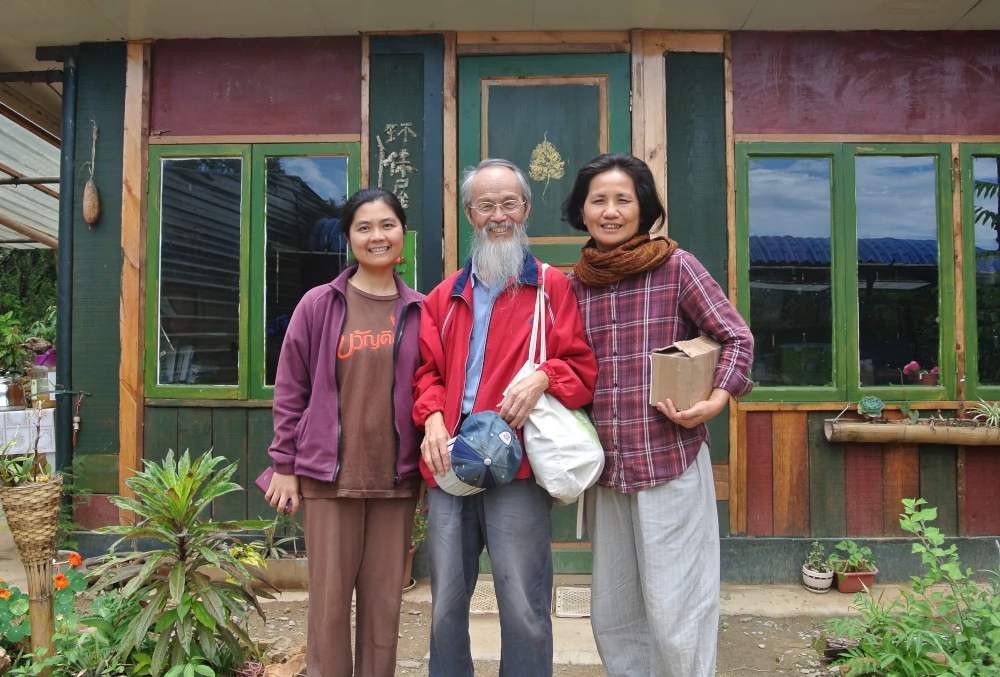

2015中國簡樸行
今年已是第五次中國簡樸萬里行，推廣鹽寮淨土的簡樸生活愛護自然理念，是分享也是傳道，是自由的樂修，心甘情願，無怨無悔。身體雖已超過古稀之老，但仍然能適應各種情況，無任何障礙。
去年因在香港鹽田梓島上鋸樹意外受傷，停頓了一年。恢復後，再接受各地組織團體的邀請，四月初就動身起程。仍然夫唱婦隨，各盡所能，發揮所長。

到大陸前後共二個半月，曾登高山鄉村，有雲南大理少數民族村，西雙版納禪林；下海邊城市，有廣西北海古老新城等，共去了中國南西部三個省，八個城市，三十二個地點，二十六個組織，小眾接觸相遇近千人(865)。
各地的生活環境各有不同，氣候炎熱乾燥，早晚溫差大；住宿高山、鄉村、城市；飲食酸辣鹹濃，但我們仍能保持簡單、節儉、清淡、健康的原則，身體不會受到太多影響，回來休息一二天就回復正常了。這次與以前不同的是每到一地，時間較長，前後有休息，不會太過緊急衝忙，身體的調節就有時間。
我們分享鹽寮理念，除了用媒體曾拍攝過的影片、自己製作的投影片外，今年加了一些不必用電腦電器等設備的大張紙幅及紙卡片，有系統、次序、條理，放在桌上地上都有動態的創意，更為活躍有吸引力。不過帶著這些紙資料行動較為重累一些。
我講述的鹽寮專題大概都在：鹽寮淨土、鹽田梓簡樸居、簡樸生活的反省原則與智慧、全球暖化生態危機、環保非工作、環保第一課、第二課、人生只有一份工作生活、愈少愈自由、素食的原因、我的或然人生、生命一頓、天地人合一、愛的分享、迎日操、和好操、水修行、立石修行、拾垃圾修行、市場撿菜、各種修行等等。
秀娟即加上一些生態心理學的方法及在鹽寮廚房的經驗帶領：生態與我、我與自然、城市生活的簡樸、簡樸的家居、簡樸的廚房、廚房沙龍、吃的藝術、你快樂了嗎？等等，這些主題也有不少人有興趣。
各地大都是主動提前邀請去的，只有一二個組織臨時插入，一二個地點臨時安排，有時間就沒有問題。其中有些地點只是踩點，看是否適合辦體驗營；有些是否可作將來共生家園基地；有些地點只是短暫交流。我們分享理念，帶領活動，他們安排接待，且支付所有食宿交通費用，還有另外導師費，各人自由贊助費，所以只要有心有力，物質金錢一點都不欠缺，還有多餘呢。
每到一地活動之後我還會贈送一些鹽寮理念的書法字句給主辦單位和有心贊助支持的人。寫字的材料都是就地取材，有紙卡片、果殼、樹葉、樹皮木片、竹片、長竹筒、石頭、及用電線做的一線字，使大家大開眼界。
今年是否辛勞呢？到每個地方都有前後時間休息，注意身體反應，就沒有大事。每個地方都有當地組織的人負責接送帶路，交通方便。只有一次，在活動之後我們想散散心，去參觀免費的南寧民族博物館，多認識一下他們的少數民族。我們得到資訊坐車路線，就由秀娟帶路，可是來來回回走了很多路才找到正確的車站，一是南寧在建地鐵交通改變很多，二是有些外地人隨便指一指方向，我們共問了七八次才確定找到。天氣酷熱，滿身大汗，幸好經過一酒店，在大廳休息一下，才能繼續前行。博物館是新建的，在郊外遠處，只有單一公車到達，二小時才有一班。我們為省些時間只好找了兩位年輕人共乘計程車(打的)，分擔也不算貴。回頭又要轉車二次，這次問公車司機在哪裡轉車站，以為可靠，可是這路車是很少的，司機也說錯了，害我們又問了好幾個人才找到，這天真是勞累啊！
民博館是值得看的。它之前一站有個很大的孔廟，分四五進的庭院，也是新的。展示孔子家族、弟子、精神、一生經歷等。原來孔子也是四十二歲就退修，週遊列國，七十三歲去世。使我想起我的或然人生，我有幸現在七十五還能萬里行！
這次享受到什麼嗎？各地的人情溫暖，參加活動者的熱情渴望，都是享受。體驗到各地的環境、風俗、飲食文化也是一種美好的收穫。
這次有些特別的地方，首先談談吃的吧：雲南人習慣吃酸辣米線粉麵，我們只可以嚐一嚐，天天吃實在受不了。廣西南寧有人賣大片的薄烤餅，吃起來像紙皮，如果包一些濕軟的菜食，口感就不錯。水果有很多種都未曾見過：如酸角，殼硬像豆角，果肉甜，內有藤有核；蛇皮果殼上有一點點像蛇皮紋，外形即像大粒水滴，果肉有點怪異；龍令圓胖黃色、也少見。
雲南的南方西雙版納州是中緬交界處，很大一個州區，我們第一次到。有很多「傣」族人民，有中泰混合文化，寺廟都像泰國南傳佛教，三層尖斜廟頂，屋頂屋尖屋角屋邊都有精緻雕刻。女人穿著長裙也像泰國。這一州很多地名、店名都很特別，地名如：勐海、勐邦、勐混、勐遮、勐龍…曼滿、曼來、曼恩、曼根、曼列…。店名：八酒食、湘鄉香、大平地…。有一食物廣告的兩句話，很有文學氣氛，不少餐廳都借用了。我即改了兩個字，三變雙，里變步，而成：「一嚐美味雙拍手，十步聞香九回頭。」
昆明與大理之間有古恐龍遺蹟，在昆明博物館就有恐龍骨展覽。大理附近也有很多少數民族，我們有一次活動在白族周城村，是中國最大的白族村二千多戶。全村在山腳下，屋子白色，藍灰色屋頂及牆邊。卻有一座漢式四合院舊木樓，我們的活動就在那裡。村裡還有一座三教同源合一大廟，儒釋道三教在中國都有很好的發展，如提倡和諧合一，宗教就會共融，是好事。在昆明西邊安寧市也有三教和合的三和寺，我們有與他們交流了半天。
由昆明往南到西雙版納有五百多公里的高速公路，新開發，行車不多。有一位志願者路路願意開車與我們一同前去，為了避免她全程開車太累，中途我也開了一個小時約百公里。接近邊界常有路檢，我們多了一人，只好有人下車走路過關。另一次我正在開車，公安看見我白鬍子載著一車年輕人，只問是從哪裡來，卻不查駕照，順利通過！大家都在緊張，然後放下。
雲南很多地方在一二千公尺以上，氣候日夜溫差大，白天出汗，晚上要穿長袖衣，甚至蓋被，我們也沒有問題，都能適應。西雙版納的法住禪林是在山上，在山下水庫旁有一為賓客的宿舍，我們上山探訪要走很陡峭的山路大半小時，幸好我們不要每天上山，只一二人上去禪修二三天而已，其他人可以在山下靜修。禪林是一個佛教的道場，有不少出家人，也有不少修行男女眾。我們認識的小貝前年跟隨我們的簡樸行，回去後被交托負責一個「環保屋」，推廣一些對自然生態的環保觀念。在大陸的佛教尚沒有像台灣已走到環保的前線。我們看到的，像午餐有出家眾與信眾共享，但過午不食即剩下很多飯菜，可惜他們沒有好好處理。另外每天都有很多信徒上山供養，又可惜所供養的常是同類物品，如普洱茶大包細包太多了，而且也有很多塑膠包裝物，而造成很大的廢料問題。所以我們建議他們的「環保屋」不要只推廣一些環保產品，如環保手工皂、環保酵素，而要深入徹底的推廣真正的環保觀念。環保第一課餐桌上開始、塑料源頭減廢、物盡其用等等。還寫了一張餐桌環保重點讓他們貼在中午的長餐桌前，以提醒大眾。
這次也看見一些可喜的活力，有些年輕志願者想走向共生家園社區發展，在廣東、廣西都有人正在找尋基地，這是我們很樂意鼓勵與支持的。
今年各地的聯絡人大都是以前認識過的年輕朋友，和以前去過的地點。來參加分享會、工作坊、體驗營的也多是中青代的人，都嚮往簡樸、自然、修行精神的，所以很使我們感動又喜悅，有愈來愈多的後輩年輕人願意走向這種大愛大同的大道上。他們都主動積極，更心甘情願，任勞任怨、真是可喜可賀。這更增加我們萬里行的信心與動力。所以我們很希望他們能有正向、積極，有創意地去實踐這些理念，並且被此結伴同行，互助共融，互相鼓勵，增加力量，堅持到底，達成大家共同的人生目標。
每年我們都會到中國大陸傳揚簡樸生活之道理，環境保護之教育，是傳「道」又傳「教」。加上以前由1993及2001起已超過十次。以前的時間比較短暫，也只去幾個地方，傳揚理念的機會也少。但是接觸交流交談，共同生活過的人即非常之多，各有不同的生活背景，社會知識背景，宗教背景等等，但大部份都是走往美善的人生方向。我因此也領悟到各種國家、政治、宗教…的法律、規則、教條…等都是引導幫助人走往美善方向的，人只要努力快步，即可以超越這些法律、規則、教條，並不是違反，而是喜歡仁愛勝祭獻，喜歡慈悲勝法律，喜歡自約勝規則，喜歡人性勝教條，喜歡簡樸勝奢華…這就是走往最後天堂的唯一條件：「愛」。所以我分享愛的時候、就寫了很多愛的句子：愛超越一切宗教、信仰、文化、民族、社會、國家。愛是世界最大的宗教。愛是人類最高的信仰。愛是世界和平最主要的力量。愛是人類進步最後的標準。愛是人類最遠的目標。愛是天國最堅固的基石。愛是進入天堂唯一的條件。這就是世界傳揚的大愛精神。
區紀復 2015.6.30于香港